Healer (Đại Phu)
Thông tin trang bị của Đại Phu
Trang bị loại: Vũ khí
Có thể rơi ra từ quái vật và boss, ngoại trừ Đào Chi
| Hình ảnh | Tên trang bị | Danh hiệu | Nguồn |
|---|---|---|---|
| Trượng | Đại Phu | Khởi đầu | |
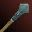 | Đào Mộc Trượng | Đại Phu | Quái |
| Mỹ Nhân Trượng | Giang Hồ Y | Quái | |
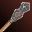 | Ỷ Nguyệt Trượng | Giang Hồ Y | Quái |
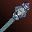 | Hương Nguyệt Trượng | Giang Hồ Y | Quái |
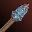 | Bảo Tháp Trượng | Giang Hồ Y | Quái |
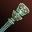 | Bích Ngọc Trượng | Giang Hồ Y | Quái |
 | Huyết Trượng | Giang Hồ Y | Quái, Boss (trừ Đào Chi) |
| Cửu Linh Trượng | Danh Y | Quái | |
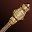 | Cửu Thiên Trượng | Độc Y | Quái |
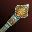 | Nguyện Hỏa Trượng | Danh Y | Quái |
| Quỷ Khốc Trượng | Độc Y | Quái | |
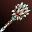 | Long Cốt Trượng | Danh Y | Quái |
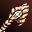 | Xích Ma Trượng | Độc Y | Quái |
 | A Tu La Trượng | Danh Y | Quái, Boss (trừ Đào Chi) |
 | Hắc Xà Trượng | Độc Y | Quái, Boss (trừ Đào Chi) |
| Luân Trượng | Long Thủ Y | Quái | |
| Vạn Độc Thần Trượng | Huyết Y | Quái | |
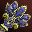 | Hàn Long Trượng | Long Thủ Y | Quái |
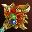 | Thần Ma Trượng | Huyết Y | Quái |
 | Thần Trí Trượng | Long Thủ Y | Quái, Boss (trừ Đào Chi) |
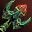 | Thôn Thiên Ma Trượng | Huyết Y | Quái, Boss (trừ Đào Chi) |
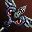 | Lữ Khách Trượng | Phi Tiên Y | Quái |
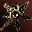 | Tu La Trượng | Nộ Thiên Y | Quái |
| Phục Ma Trượng | Phi Tiên Y | Quái | |
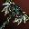 | Hoa Hồng Trượng | Nộ Thiên Y | Quái |
 | Tinh Thần Trượng | Phi Tiên Y | Quái, Boss (trừ Đào Chi) |
 | Bá Kiếp Trượng | Nộ Thiên Y | Quái, Boss (trừ Đào Chi) |
| Ẩn Hóa Trượng | Kình Thiên Y | Quái | |
| Huyết Ma Trượng | Thiên Niên Y | Quái | |
| Nhã Nguyệt Trượng | Kình Thiên Y | Quái | |
| Nghiêm Ma Trượng | Thiên Niên Y | Quái | |
| Bách Tiên Trượng | Kình Thiên Y | Quái, Boss (trừ Đào Chi) | |
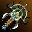 | Ám Tiên Trượng | Thiên Niên Y | Quái, Boss (trừ Đào Chi) |
Trang bị loại: Giáp
| Cấp / Phe | Nam | Nữ | Tên | Phòng thủ | |
|---|---|---|---|---|---|
| 10 | NPC Huyền Bột / Quái | Vô Danh Y Bào | 6 | ||
| 20 | NPC Huyền Bột / Quái | Kim Ti Y Bào | 10 | ||
| 30 | NPC Huyền Bột / Quái | 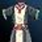 | Hắc Ti Y Bào | 14 | |
| 40 Chính phái | Quái | 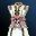 | Long Hổ Y Bào | 16 | |
| 40 Tà phái | Quái | 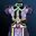 | Phá Thiên Y Bào | 16 | |
| 50 Chính phái | Quái | 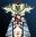 | Phong Thần Y Bào | 20 | |
| 50 Tà phái | Quái | 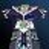 | Hắc Long Y Bào | 20 | |
| 60 Chính phái | Quái, Boss bản đồ | Thương Khung Y Bào | 22 | ||
| 60 Tà phái | Quái, Boss bản đồ | 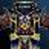 | Thiên Ma Y Bào | 22 | |
| 70 Chính phái | Quái, Boss bản đồ | 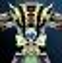 | 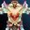 | Nguyệt Ảnh Y Bào | 26 |
| 70 Tà phái | Quái, Boss bản đồ | 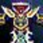 | Ám Ảnh Y Bào | 26 | |
| 80 Chính phái | Quái, Boss bản đồ | Nguyệt Thần Y Bào | 35 | ||
| 80 Tà phái | Quái, Boss bản đồ | 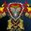 | 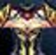 | Tụ Huyết Y Bào | 35 |
| 90 Chính phái | Quái, Boss bản đồ | 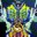 | Kỳ Thiên Y Bào | 47 | |
| 90 Tà phái | Quái, Boss bản đồ | 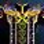 | Ma Tâm Y Bào | 47 | |
| 100 Chính phái | Quái, Boss bản đồ | Kỳ Lân Y Bào | 62 | ||
| 100 Tà phái | Quái, Boss bản đồ | Huyết Thiên Y Bào | 62 |